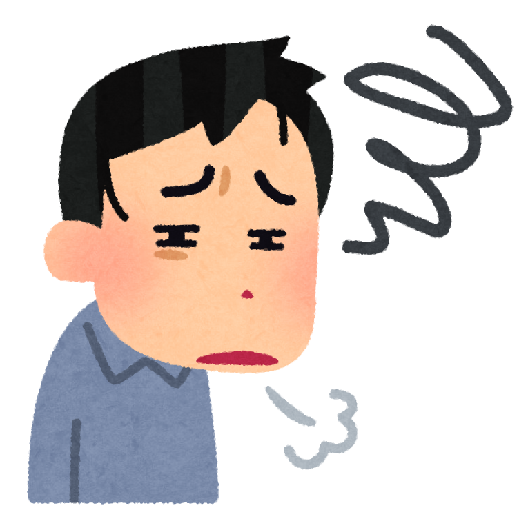
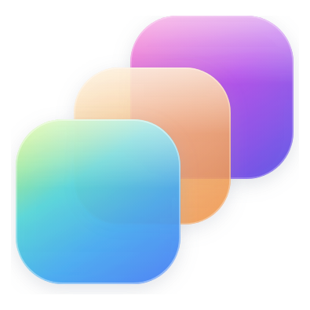
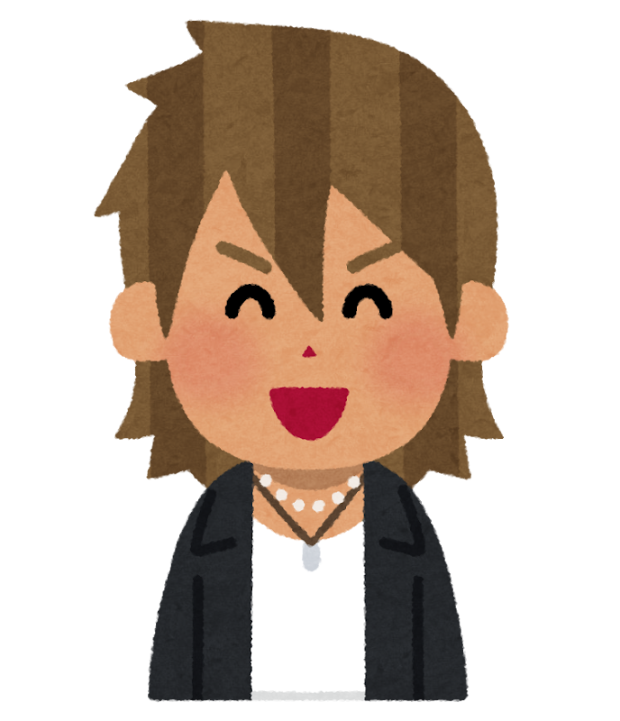
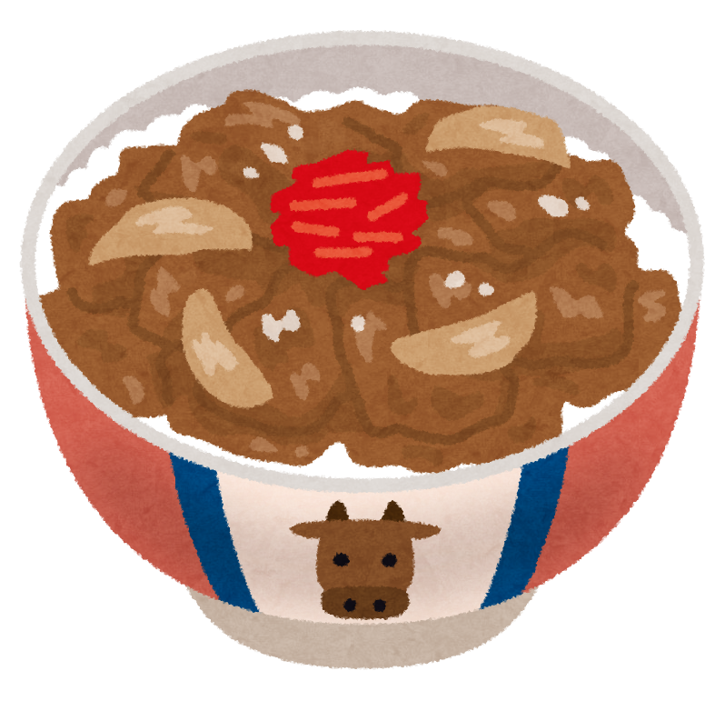
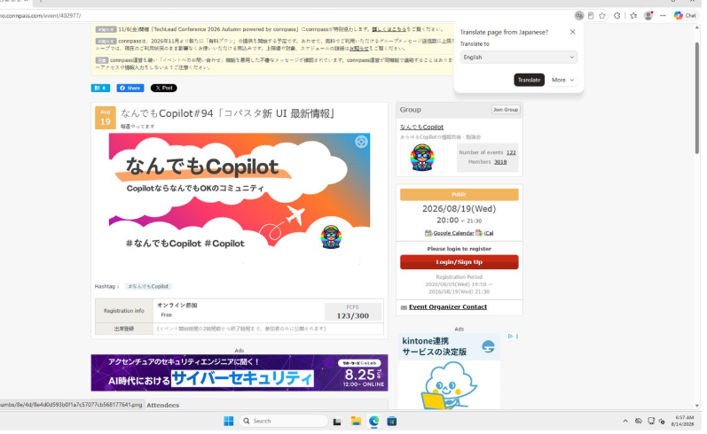
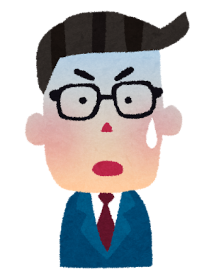
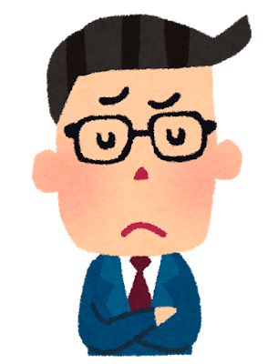
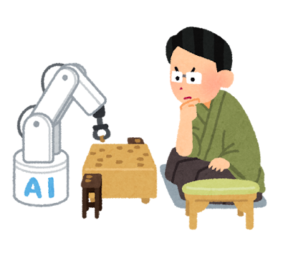
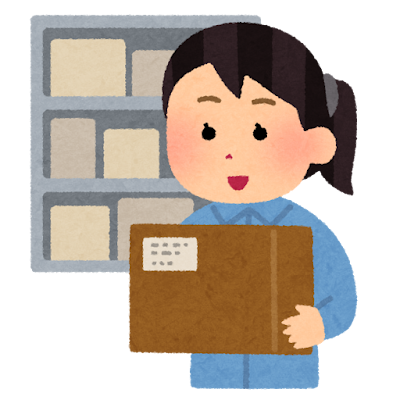
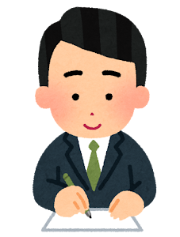

はる（Haru）
X：@isamu_Automate
AIが画面を操作する時代に、
PADが活躍できる場所
── 同じ作業をComputer useと比べてみた
Happy Low-Code【ゲスト回】 ／ 2026.10.26
次へ ▶ 自己紹介
自己紹介
は
はる（Haru）
X：@isamu_Automate
製造業・非IT部門からのスタート
社内：Power Platform の推進・講座
社外：Power Automate 45分講座 PA45 を毎週開催／PLUG（広島）発起人
Microsoft 認定トレーナー
2026年10月〜
Happy Low-Code / Haru
次へ ▶ これまでの歩み：私の自動化は PAD から始まった
これまでの歩み：私の自動化は PAD から始まった
気持ちの上がり下がりをグラフにしたもの（2026-03 一歩をフミダセTV で話した内容より）
Happy Low-Code / Haru
次へ ▶ PAD を始めたとき、師匠に最初に言われたこと
PAD を始めたとき、師匠に最初に言われたこと
会社の PAD の師匠フローを作り始める前に、業務フローを整理して、断捨離して、手順を1つずつ Excel に書くこと。クリック1つまで。
▶
▶
③ Excel に1つずつ
手順を書く
クリック1つまで
この話は、最後にもう一度出てきます
Happy Low-Code / Haru
次へ ▶ 師匠に書けと言われた表（今日の題材で書くと）
師匠に書けと言われた表（今日の題材で書くと）
人なら1分の作業でも、1行に1つの操作・クリック1つまで書く
PA45の次回を調べる_手順.xlsx
| A | B | C | D | E |
|---|
| 1 | 画面 | 操作 | 対象 | 入力・値 | 確かめること・止めどころ |
|---|
| 2 | Edge | 開く | connpass | https://connpass.com/ | トップが出たか |
|---|
| 3 | トップ | クリック | 検索欄 | ― | ― |
|---|
| 4 | トップ | 入力 | 検索欄 | PowerAutomate45（変えない） | ― |
|---|
| 5 | トップ | クリック | 🔍 ボタン | ― | 開催前だけ・2件か |
|---|
| 6 | 検索結果 | クリック | 1件目のタイトル | ― | 0件なら、ここで止める |
|---|
| 7 | イベント | 読み取る | 開催日時 | ― | PA45 の回か確かめる |
|---|
| 8 | ― | 表示する | メッセージ | 日付と URL | ― |
|---|
今日の題材を、師匠の教えのとおりに書いた例（第4章でもう一度使う）
Happy Low-Code / Haru
次へ ▶ ちょっと面倒

正直な気持ちは……
ちょっと面倒……
早くフローを作って、動かしたいのに
次へ ▶ きょうの問い
きょうの問い
AI が画面を見て、クリックも入力もする時代になった
Copilot Studio の Computer use
では、
PAD をやる意味は
まだあるのか
イラスト：いらすとや
Happy Low-Code / Haru
次へ ▶ 今日の2つの道具は、どこにあるのか
今日の2つの道具は、どこにあるのか
Copilot Studio は Power Platform の一員。Computer use は Copilot Studio のエージェントが使うツールの1つ（Microsoft Learn）
Happy Low-Code / Haru
 PAD ×
PAD × 
Computer use次へ ▶ PAD とは：決めた手順で、画面を操作する
PAD とは：決めた手順で、画面を操作する
Power Automate for desktop の略。いわゆる RPA
検索欄・ボタンなど、
押す場所を人が決めて並べる
Windows 10/11 なら、
手元で人が動かす使い方は追加費用なし
Microsoft Learn「Power Automate licensing FAQ」（2026-09-22 確認）
Happy Low-Code / Haru
いまの話：PAD
次へ ▶ Computer use とは：AI が画面を見て、操作する
Computer use とは：AI が画面を見て、操作する
AI が画面を見て、次に押す場所を決める（実画面）
Copilot Studio の
エージェントが使うツールの1つ
やりたいことを文章で頼む。
押す場所はAI がその場で決める
1手ごとに Copilot クレジット
（標準モデルで5）
Microsoft Learn「Automate web and desktop apps with computer use」（2026-10-20 更新）
Happy Low-Code / Haru
いまの話：Computer use

次へ ▶ 2つを人にたとえると
同じ仕事ができる2つ。でも性格はまったく違う。人にたとえると……
PAD
真面目すぎる人
決めた手順以外は、やらない
1つでもズレたら、そこで止まる
vs
Computer use
臨機応変に進める人
とりあえずやってみて、ダメなら別の手
その場で考えながら、どんどん進む
イラスト：いらすとや
次へ ▶ ゴールまでの道のり
ゴールまでの道のり
ゴール：AI が画面を操作する時代に、PAD をやる意味を見つける
Happy Low-Code / Haru
次へ ▶ 第1章 しくみ
今日のゴール：AI が画面を操作する時代に、PAD をやる意味を見つける
第1章 しくみ
どちらも画面を操作する。
でも、中で起きていることが違う
ここから：同じ作業を両方で作ってみた。
まずは作り方の違いから
Happy Low-Code / Haru
次へ ▶ 題材：毎週やっている、4ステップの画面作業
題材：毎週やっている、4ステップの画面作業
connpass（勉強会の申込みサイト）で、PA45 の次回の日付と URLを控える
2入れて🔍を押す
「PowerAutomate45」
Happy Low-Code / Haru
PAD × Computer use
次へ ▶ PAD：作るときに決めて、そのとおりに押す
PAD：作るときに決めて、そのとおりに押す
最後に「2026/10/29(木)」と表示（実画面）
検索結果のページを直接開く形に、人が直した（4アクション）
Power Automate for desktop の実画面（2026-10-25）
メモ：▶の前に Edge を完全に閉じる／スライドは Chrome で開く／URL は 2026/10/26 固定
Happy Low-Code / Haru
▶ デモPAD を実行いまの話：PAD
次へ ▶ Computer use：やりたいことを文章1つで頼む
Computer use：やりたいことを文章1つで頼む
Copilot Studio の実画面（2026-08-14・2026-10-24）／モデル：Claude Sonnet 4.5
Happy Low-Code / Haru
いまの話：Computer use
次へ ▶ Computer use は「撮る→考える→押す」のくり返し
Computer use は「撮る→考える→押す」のくり返し
Copilot Studio のテスト画面（2026-10-24）
Happy Low-Code / Haru
▶ デモComputer use を実行（PowerAutomate45）いまの話：Computer use
次へ ▶ 第2章 実験
今日のゴール：AI が画面を操作する時代に、PAD をやる意味を見つける
第2章 実験
判断の仕方が違うと、
実際に何が起きるのか
第1章で分かったこと
PADどこを押すかは、作るときに人が決め終えている
AIどこを押すかを、実行のたびにその場で決める
つまり違いは、判断をいつ・誰がしているか
Happy Low-Code / Haru
次へ ▶ 実験の全体像：Computer use に2つの頼み方をした
実験の全体像：Computer use に2つの頼み方をした
実験1
普通に頼む
PowerAutomate45 の次回
正解。ただし約7分
途中で、答えの画面を手放していた
実験2
存在しないものを頼む
コパスタ45（0件が正解）
3回とも結末が違った
正しく答えた／別のイベント／回り続けた
Happy Low-Code / Haru
いまの話：Computer use
次へ ▶ 実験1：普通に頼むと正解。ただし約7分
実験1：普通に頼むと正解。ただし約7分
頼んだ文
（これだけ）
https://connpass.com を開き、「PowerAutomate45」で検索して、次回イベントの日付とURLを記録してください。
どこを押すか・0件ならどうするか・どう確かめるかは、書いていない
2026-10-24 実測。1手5クレジット＝Microsoft Learn computer-use（Claude Sonnet 4.5＝標準）／テスト実行も消費される（管理センターで確認）／¥換算＝25,000クレジット ¥29,985 のパック単価
Happy Low-Code / Haru
↩ デモの結果17枚目で動かした分いまの話：Computer use
次へ ▶ 実験1：一度たどり着いた答えの画面を手放していた
実験1：一度たどり着いた答えの画面を手放していた
アドレス欄：最初は開催日の絞り込みつき → あとは絞り込みなし。そこからスクロール・2ページ目・並び替えで探し直した
Copilot Studio のテスト画面（2026-10-24）
Happy Low-Code / Haru
いまの話：Computer use
次へ ▶ 実験2：まだ存在しないものを頼んでみた
実験2：まだ存在しないものを頼んでみた
connpass を開き、「コパスタ45」で検索して、次回イベントの日付とURLを記録してください
コパスタ45＝これから始める講座。検索すると0件＝正解は「見つかりません」
PAD なら
リンクが見つからず、
そこで止まって知らせる
AI は？
0件の画面を見たら、どうするか
同じ指示・同じモデルで3回動かした
Happy Low-Code / Haru
▶ デモコパスタ45 で実行PAD × Computer use
次へ ▶ 0件を見て、AI は検索語を変えた。なぜ？
0件を見て、AI は検索語を変えた。なぜ？
AI の考え（8月14日・そのまま）「コパスタ45」という正確な名前で検索しても結果が見つかりません。別の検索方法を試してみます。
AI の考え（10月24日②・そのまま）該当するイベントが見つかりませんでした。検索キーワードを変更してみます。「コパスタ」だけで検索してみましょう。
指示：「コパスタ45 で検索して、
次回イベントの日付と URL を記録して」
▼
AI は「イベントはある」前提で読んだ
▼
0件を「答え」ではなく「探し方の失敗」と受け取り、気を利かせて探し続けた
「0件ならどうするか」は、指示に書いていなかった。8月は別グループのイベントを開き、10月②は候補の「コパスタ45」を選び直して0件に戻る、を繰り返して人が止めた
左は Copilot Studio のテスト画面の文の抜き出し（2026-08-14／2026-10-24）。右は AI の考えから読んだ解釈
Happy Low-Code / Haru
いまの話：Computer use
次へ ▶ 検索するだけで約400円

connpass で検索しただけで（3回）
約400円、、？
牛丼1杯分
……じぶんでやる
2026-10-24 の3回で 355 クレジット（管理センター）。パック単価 約¥1.2 で換算
次へ ▶ まとめると：同じ指示で、3回とも結末が違った
まとめると：同じ指示で、3回とも結末が違った
| 実行 | 0件のあと、AI がしたこと | 結末 |
|---|
| 8月14日 | 「コパスタ」に変えて検索し直した | 別のグループのイベントを開いた |
| 10月24日 ① | 検索語は変えなかった | 「見つかりません」と正しく答えた |
| 10月24日 ② | 「コパスタ」に変えようとした | 回り続け、人が止めた |
| 今日 | （いまのデモで確認） | ？ |
普通に頼んだときの時間も、1分19秒・3分30秒（8月）、7分（10月）とばらついた
すべて Claude Sonnet 4.5・同じ手順の文。2026-08-14／2026-10-24 実測
Happy Low-Code / Haru
↩ デモの結果22枚目で動かした分いまの話：Computer use
次へ ▶ 第3章 考察
今日のゴール：AI が画面を操作する時代に、PAD をやる意味を見つける
第3章 考察
この結果から、
何が言えるのか
第2章で分かったこと：AI は正しく答えられる。ただし時間も結末も、毎回同じとは限らない
Happy Low-Code / Haru
次へ ▶ AI は毎回ゼロから考える。だから時間が読めない
考察 1
AI は毎回ゼロから考える。だから時間が読めない
PAD：考えるのは、作るときの1回だけ
AI：実行のたびに、毎回ゼロから考える
実験で起きたこと
同じ作業なのに、AI は1分19秒・3分30秒・7分とばらついた
つまり
PAD は考えるのを作るときに済ませている。AI は実行のたびに考え直す
仕事に置き換えると
新人に毎回口で説明するか、手順書を1回作って渡すか
Happy Low-Code / Haru
PAD × Computer use
次へ ▶ PAD は止まって知らせる。AI は止まらない
考察 2
PAD は止まって知らせる。AI は止まらない
PAD：止まって知らせた
「フォーム フィールドが見つかりません」
AI：0件のまま回り続けた
終わる様子がなく、人が止めた
実験で起きたこと
PAD は準備中に、検索欄が見つからず止まった。AI は 0件でも探し続けた
つまり
止まる＝「ここを確かめて」と人に声をかけてくれること
仕事に置き換えると
分からないと聞きに来る新人と、黙って自己流で進める新人
Happy Low-Code / Haru
PAD × Computer use
次へ ▶ AI の失敗は、成功に見えることがある
考察 3
AI の失敗は、成功に見えることがある
AI の失敗（8月14日）

✓ イベント情報を確認できました
実は別のイベント
実験で起きたこと
8月、AI は別グループのイベントを開き「確認できました」と報告した
つまり
PAD の失敗は一目で分かる。AI の失敗は中身を確かめないと分からない
仕事に置き換えると
それらしい報告書が届くが、中身は別の案件だった

Happy Low-Code / Haru
PAD × Computer use
次へ ▶ AI は、同じ指示でも毎回結果が違う
考察 4
AI は、同じ指示でも毎回結果が違う
PAD：同じ手順なら、毎回同じ
AI：同じ指示（コパスタ45）でも、毎回違う
実験で起きたこと
同じ指示・同じモデルで3回頼んだら、結末が3通りに分かれた
つまり
PAD は1回確かめれば次も信じられる。AI は1回うまくいっても次は分からない
仕事に置き換えると
AI に任せるなら、何回か試して、ぶれ幅を見てから本番に

Happy Low-Code / Haru
PAD × Computer use
次へ ▶ 第4章 PAD をやる意味
今日のゴール：AI が画面を操作する時代に、PAD をやる意味を見つける
第4章 PAD をやる意味
AI が画面を操作する時代に、
PAD をやる意味は何か
第3章で分かったこと
1AI は毎回ゼロから考える。だから時間が読めない
2PAD は止まって知らせる。AI は止まらない
3AI の失敗は成功に見えることがある
4AI は同じ指示でも毎回違う
Happy Low-Code / Haru
次へ ▶ 師匠の言葉は、AI 時代の答えだった
最初の話に戻ります
師匠の言葉は、AI 時代の答えだった
PAD を始めたとき、師匠に言われたこと
① 業務フローを整理する
② 断捨離する
③ 手順を1つずつ Excel に書く
（クリック1つまで）
今日の実験で分かったこと
棚卸し：何をしているか全部出す
断捨離・適切化：あいまいさを決めきる
言語化：誰でも同じに動く言葉に
＝AI への良い指示
よく言う「プロンプトの書き方」の中身は、この3つをやったあとに書く言葉そのもの
Happy Low-Code / Haru
いまの話：PAD
次へ ▶ 師匠の Excel 表で、AI のつまずきは防げていた
師匠の Excel 表で、AI のつまずきは防げていた
PA45の次回を調べる_手順.xlsx
| A | B | C | D | E |
|---|
| 1 | 画面 | 操作 | 対象 | 入力・値 | 確かめること・止めどころ |
|---|
| 2 | Edge | 開く | connpass | https://connpass.com/ | トップが出たか |
|---|
| 3 | トップ | クリック | 検索欄 | ― | ― |
|---|
| 4 | トップ | 入力 | 検索欄 | ②PowerAutomate45（変えない） | ― |
|---|
| 5 | トップ | クリック | 🔍 ボタン | ― | ①開催前だけ・2件か |
|---|
| 6 | 検索結果 | クリック | 1件目のタイトル | ― | ③0件なら、ここで止める |
|---|
| 7 | イベント | 読み取る | 開催日時 | ― | ④PA45 の回か確かめる |
|---|
| 8 | ― | 表示する | メッセージ | 日付と URL | ― |
|---|
AI のつまずき：
①近道を手放した
②検索語を変えた
③回り続けた
④別のイベントを並べた
この表は、そのまま PAD のフローにも、AI への指示にもなる
今日の題材を、師匠の教えのとおりに書いた例
Happy Low-Code / Haru
いまの話：PAD
次へ ▶ PAD は決めないと動かない
PAD は決めないと動かない
PAD
1つでもあいまいだと
作れない・動かない
今回：検索欄の住所があいまいで止まった
止まる → 原因が分かる → 直す、を作るたびに繰り返す。だから「どこで止まりうるか」を先に考える力（失敗の想像力）が身につく
AI は止まらないので、その想像を先に指示に書いておくしかない
Happy Low-Code / Haru
PAD × Computer use
次へ ▶ AI を確実にしようとするほど、指示は手順に近づく
PAD をやる意味
AI を確実にしようとするほど、指示は手順に近づく
AI に任せるかどうかは、オンかオフではなく、どこまで人が先に決めておくかの目盛り。
人が決めるのは「何を・どこまで」、AI に任せるのは「どこを押すか」
Happy Low-Code / Haru
PAD × Computer use
次へ ▶ AI が賢くなるほど、決めきって言葉にする力の価値は上がる
よく出る反論：「AI が賢くなれば、あいまいでも大丈夫では？」
AI が賢くなるほど、
決めきって言葉にする力の価値は上がる

賢くなるほど、あいまいな指示でも
それらしく、上手に進む
→ 間違いに気づく機会は、むしろ減る
（今回の「別のイベントを確認できました」のように）
Happy Low-Code / Haru
PAD × Computer use
次へ ▶ 師匠の手順を渡したら、遠回りせずに答えた
師匠の手順を渡したら、遠回りせずに答えた
1候補は選ばず、自分で入力した（指示どおり）
22件の画面のまま、タイトルの文字を押した
3正解：10/29 20:15〜、URL つき
Copilot Studio のテスト画面（2026-10-26 12:09〜12:11 ごろ・Claude Sonnet 4.5・1回分）。実験1と同じ検索語・同じモデル
Happy Low-Code / Haru
いまの話：Computer use
次へ ▶ 師匠の手順を、Computer use に渡したら
つまり
師匠の手順を、
Computer use に渡したら…
ちゃんとできた
師匠の表を、13行の手順にして渡した
→ 候補を選ばず、タイトルを押して正解（10/26 実測）
次へ ▶ PAD は、棚卸し・断捨離・言語化の力を鍛える場所。その力が、そのまま AI への指示になる
まとめ：AI が画面を操作する時代に、PAD をやる意味
PAD は、棚卸し・断捨離・言語化の力を鍛える場所。
その力が、そのまま AI への指示になる
仕事として
毎回同じに動き、想定外なら止まって知らせてほしい仕事
力として
業務を決めきって言葉にする力。AI に渡すときにそのまま使える
私の自動化も、2022年に PAD から始まった。非IT の現場で身につけたのは、この力だった
Happy Low-Code / Haru
PAD × Computer use
次へ ▶ 持ち帰り3つ：明日、業務を1つ選んで
持ち帰り3つ：明日、業務を1つ選んで

① 棚卸し
手順を全部書き出す
毎回やっていることを、順番に
② 断捨離・適切化
要らない手順を捨て、
あいまいさを決めきる
どこから・何を・どこで止める

③ 言語化
誰でも同じに動く言葉にする
PAD のフローにも、AI の指示にもなる
Happy Low-Code / Haru
PAD × Computer use
次へ ▶ ありがとうございました
は
ありがとうございました
X：@isamu_Automate
Happy Low-Code / Haru